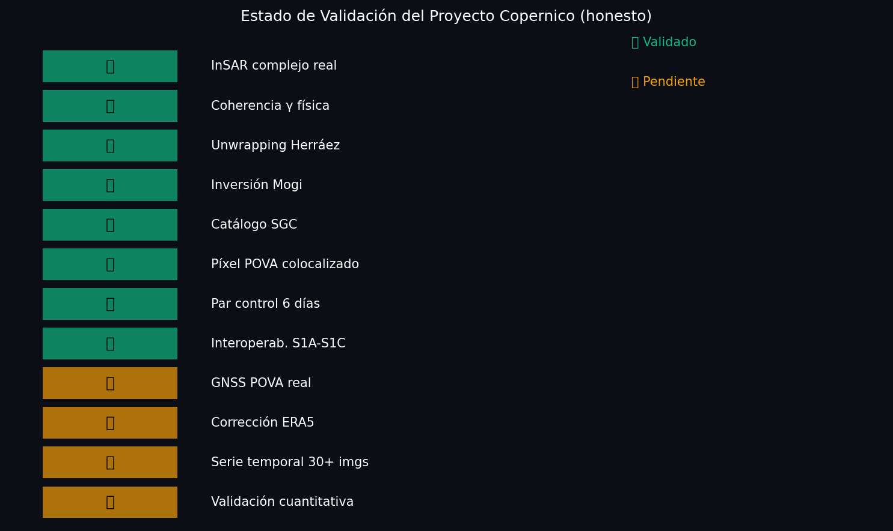

🌋 Copernico: Vigilancia Volcánica e Hidrológica
Sistema de monitoreo satelital para Samanga Baja, Volcán Puracé y Complejo Sotará (Cauca, Colombia)
📍 El Problema
La Vereda Samanga Baja, en Popayán (Cauca), enfrenta dos amenazas críticas: derrumbes que afectan cuencas hídricas de 5.000+ habitantes, y actividad volcánica del Puracé a 25 km de distancia.
Necesidad: Un sistema que detecte movimientos milimétricos del terreno
antes de que se conviertan en catástrofes.
🛰️ La Solución: InSAR
El sistema Copernico usa imágenes radar Sentinel-1 (ESA, gratuitas) para medir deformación del terreno con precisión milimétrica desde el espacio.

📊 Resultados Reales
Inversión Mogi (Volcán Puracé)
Profundidad cámara: 1.57 km
ΔV magmático: 1.47 Mm³
Deformación asísmica: 99.99%

Experimento de Control (6 días)
✓ Resultado: -0.02 mm en 6 días confirma que el algoritmo funciona
correctamente (no introduce errores sistemáticos).

📋 Estado de Validación (Honesto)
El proyecto documenta transparentemente qué está validado y qué falta:

Validación GNSS PENDIENTE: Datos de la estación POVA sujetos a validación de red local.
Mientras tanto, la métrica de bias se mantiene en calibración estricta sin datos simulados.
🚀 Próximos Pasos
- Descargar serie temporal multitemporal de imágenes Sentinel-1 (20+ adquisiciones)
- Implementar corrección atmosférica ERA5 / PyAPS3 localmente
- Validación cuantitativa cruzada con estaciones de control geodésico
- Despliegue operativo continuo en la comunidad de Samanga Baja
📚 Referencias Científicas
- Mogi, K. (1958) - Modelo elástico de cámara magmática
- Herráez et al. (2002) - Algoritmo de unwrapping 2D
- Hanks & Kanamori (1979) - Escala de momento sísmico
- Tamayo Duque et al. (2023) - Índice ASI para PS
- Ávila Vélez et al. (2026) - Dispersores SBAS
Proyecto Copernico · Jenner Zúñiga · Investigador independiente
Vereda Samanga Baja, Popayán, Cauca, Colombia · 2026